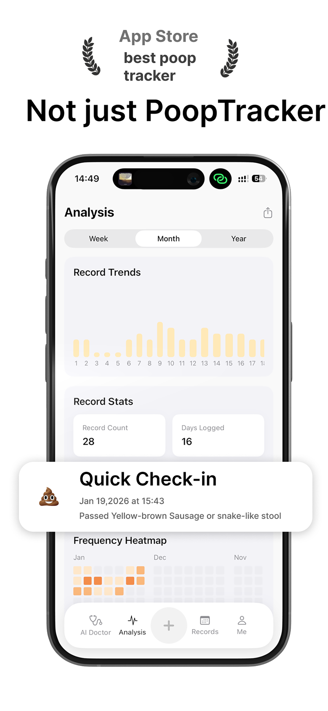
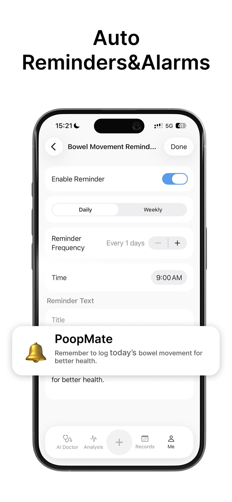
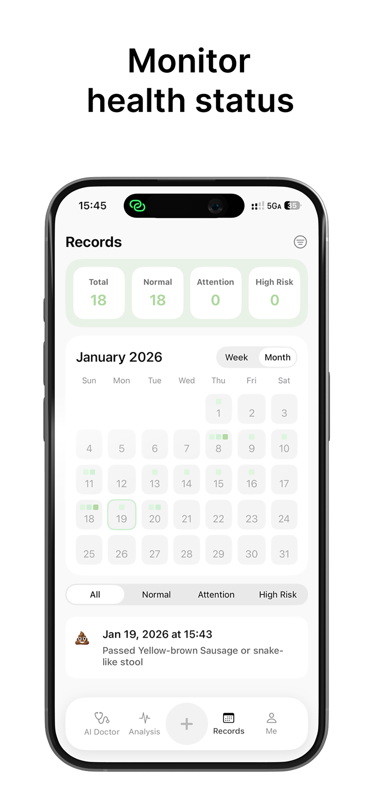

How to build a consistent poop routine
Consistency matters more than intensity. Start with one reliable time window and build from there.
- Pick a weekday window that matches your natural rhythm.
- Log every bowel movement, even the small ones.
- Adjust reminder timing by 15 minutes each week.

Poop reminder schedule for constipation
A calm reminder schedule reduces stress while encouraging regularity.
- Set two reminder windows instead of constant alerts.
- Pair reminders with hydration and gentle movement.
- Review your poop log weekly to spot gaps.
What should a poop log include?
Detailed logs make it easier to understand patterns and share clear info with a doctor.
- Stool shape and consistency.
- Color, blood presence, and ease.
- Timing, frequency, and discomfort level.

When to worry about constipation
Short gaps are common. Persistent discomfort or hard stools are worth attention.
- Long gaps between bowel movements.
- Hard, dry stools with strain.
- Ongoing bloating or pain.

Poop tracker vs. poop calendar
A poop tracker captures detail. A poop calendar shows frequency at a glance.
- Use a tracker to log stool data and symptoms.
- Use a calendar to see streaks and gaps.
- Combine both for full context.

Why reminders improve bowel health
Reminders make routines automatic so you focus on wellness instead of worry.
- They reduce anxiety around timing.
- They support habit formation.
- They keep your poop log complete.
AI doctor insights in 3 seconds
Photo checks and fast analysis give you clarity without long waits.
- Snap a photo to get instant feedback.
- Ask AI for next-step suggestions.
- Stay calm with a clear plan.